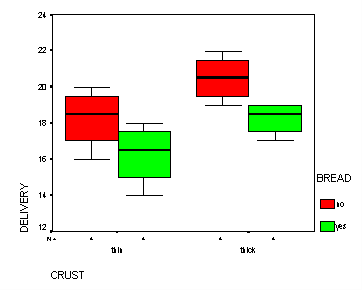

| / Home |
Keywords: Three-Way Analysis of Variance, Designed Experiment.
Experiment conducted by Bill Afantenou, second year statistics student at QUT. Here is his description of the experiment:
``As I am a big pizza lover, I had much pleasure in involving pizza in my experiment. I became curious to find out the time it took for a pizza to be delivered to the front door of my house. I was interested to see how, by varying whether I ordered thick or thin crust, whether Coke was ordered with the pizza and whether garlic bread was ordered with the pizza, the response would be affected.
``Because of my current financial status and limitation of time, I decided to have only two replicates, just to get a reasonable estimate of the variance. To decrease my financial burden I managed a deal with the manager of the pizza shop. I managed to get the pickup special, delivered to my house, which was the cheapest and smallest pizza made. I tried to repeat the experiment in as nearly as possible identical conditions to reduce `noise'.
``I ordered the pizza from the same shop, being Domino's Pizza. To be consistent I ordered a Supreme pizza each time at approximately the same time of day. The response was measured from the time I closed the telephone to the time the pizza was delivered to the front door of my house.
``I wrote each of the eight treatments on a piece of paper twice, put them all into a hat, mixed them up, and took them out one at a time to allocate the order in which each treatment was done.
``As well as the response and treatment for each pizza delivery the actual hour of delivery was recorded, also the order in which the treatments were done and whether the driver was male or female.''
| Variable | Description | ||
| Crust | Thin=0, Thick=1 | ||
| Coke | No=0, Yes=1 | ||
| Bread | Garlic bread. No=0, Yes=1 | ||
| Driver | Male=M, Female=F | ||
| Hour | Time of order in hours since midnight | ||
| Delivery | Delivery time in minutes | ||
Data file (tab-delimited text)
This experiment shows interesting interactions between factors and some interesting features in the residual plots, including the possible use of covariate information to investigate unplanned influences on the response.
Delivery is quicker when a drink or garlic bread is included, because the drivers were paid more for more items.

|
Home - About Us -
Contact Us Copyright © Gordon Smyth |